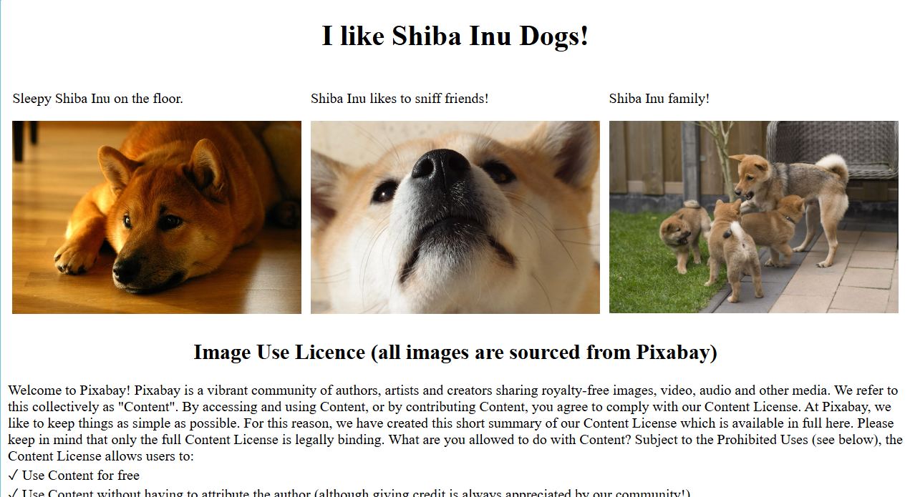
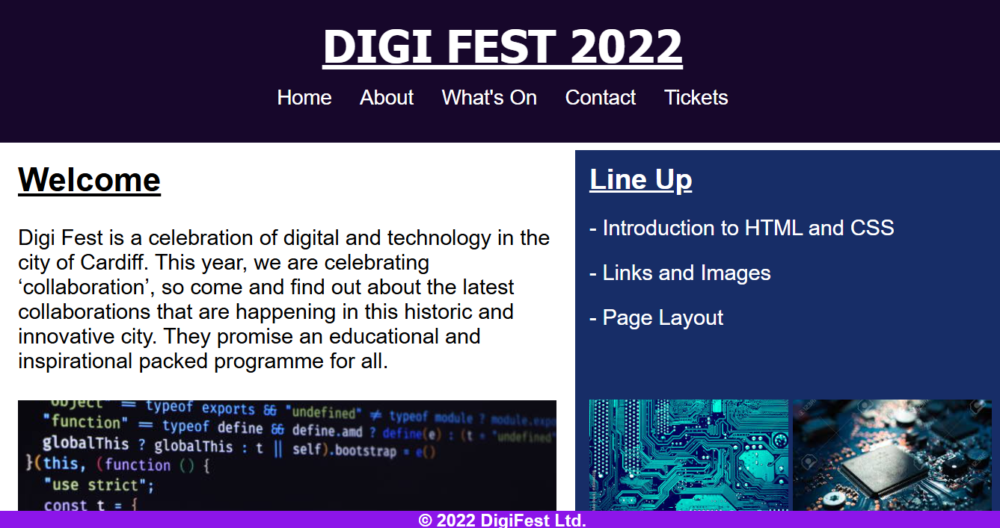

I am Diego Catal, a student currently pursuing my bachelor's degree in
CyberSecurity at Future Business and Technology Institute for Higher
Training.
About Me
I was born in Saudi Arabia in April of 2007. Ever since I was young, I
have always had a passion for learning and improving myself through
continuous self-reflection and acquiring new knowledge. My mission is to
help improve people's lives and society through my skils in
Cybersecurity.
Projects and Experience
I have developed various kinds of web pages as a part of my first year
as a Cybersecurity Student as shown below:


Through these projects I have gained a basic understanding of how to
develop web pages and the syntax behind them, HTML5, CSS, and basic
inline JavaScript. Thank you to Mr. Mohammed Israr for imparting this
knowledge to me.
I have also acheived a certificate and badge in 'Cybersecurity
Fundamentals' from IBM. This is just first many I'm planning to acquire
and it shows my passion for acquiring new knowledge and skills.
You can contact me via mobile at: +966 054 769 8579
or you can send me an email: cataldiego5@gmail.com